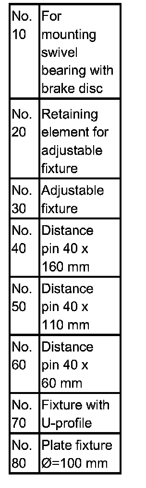
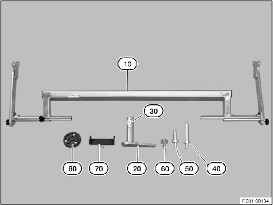
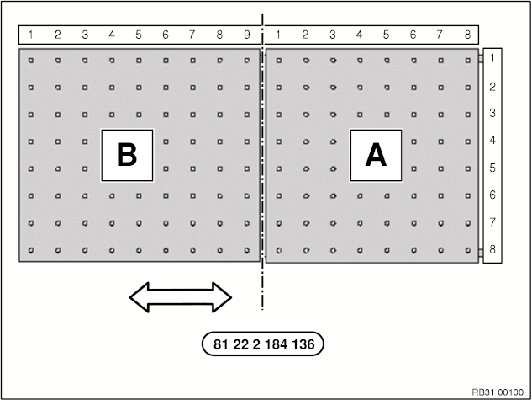

31 00 ... Mobile Table Lift
31 00 Mobile table liftWarning!
Danger of injury!
Before beginning work, position table lift with the lower frame securely on the floor.
Danger area around mechanism below platform.
^ Do not reach into or step into the danger area.
^ Note permissible bearing capacity of table lift.
^ Mount load centrally (danger of tipping) and secure against shifting.
Follow the operating instructions from the equipment manufacturer.

The mobile table lift is used for collision repairs and when removing large engines.

Adaptations for mounting front axle with engine and transmission.

Release star knob screw on working plate (B) of table lift; the working surface (B) can be extended by approx. 310 mm.
Release all push-pull clamps and the working plates can be shifted by approx. 20 mm.
Working plate (A and B) can be raised and lowered by 3° on the long side and by 5° on the transverse side.
Working plate (A and B) is subdivided by a coordinate system and a possible installation position is recommended in the respective repair manual
Important!
Follow the operating instructions from the equipment manufacturer.